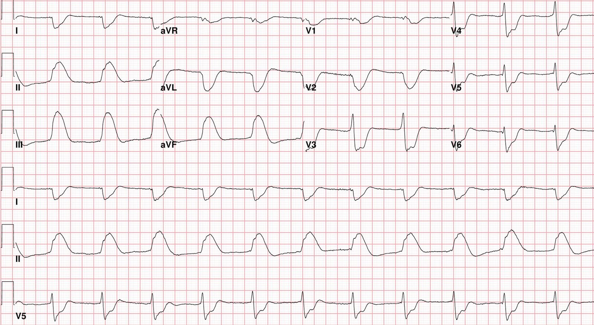
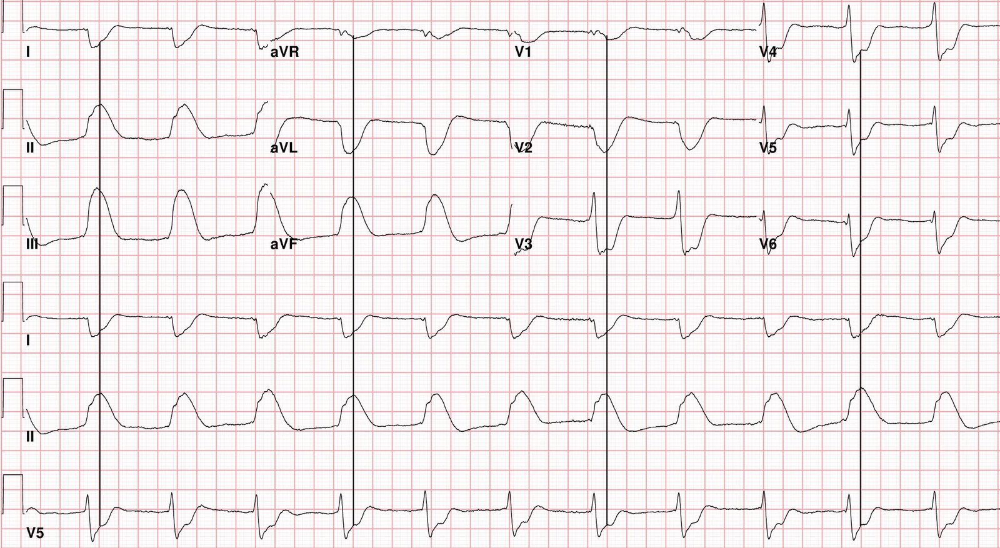
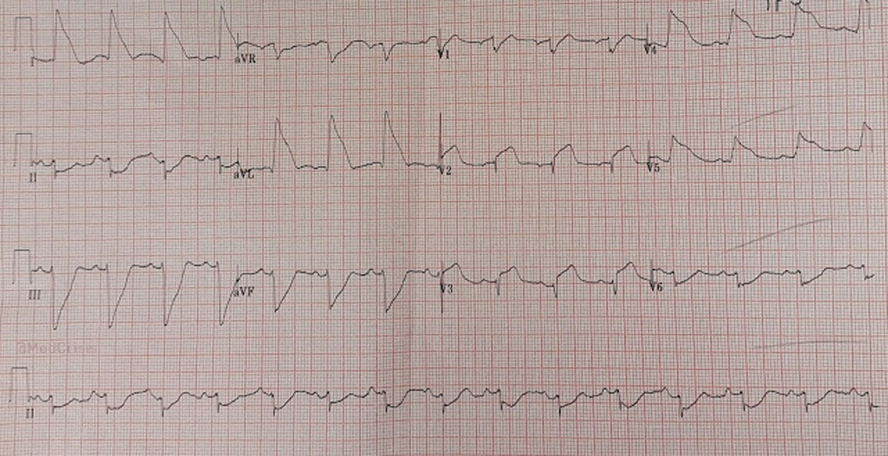
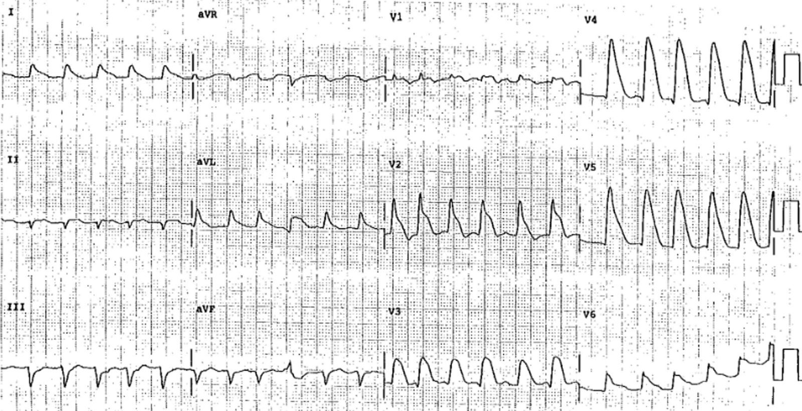
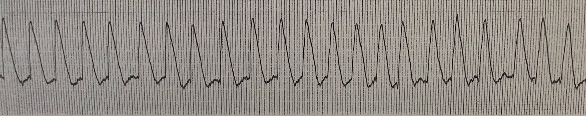
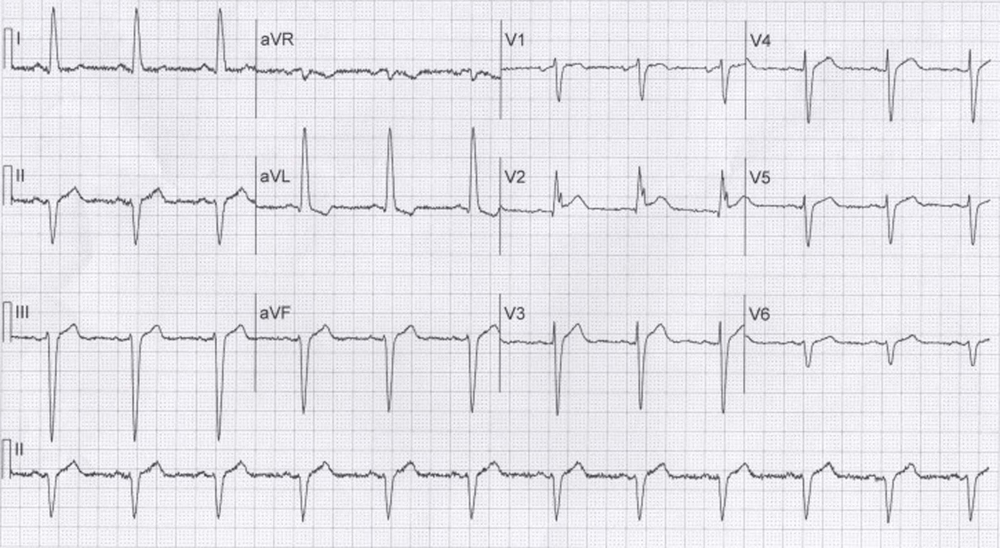
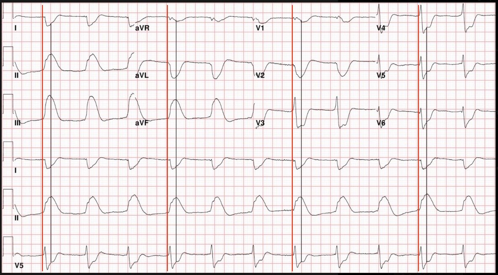

11/06/2018 — “Vây cá mập” (Shark Fin): Một dấu hiệu điện tâm đồ chết người mà bạn phải biết!
Bản dịch tiếng Việt của bài "“Shark Fin”: A Deadly ECG Sign that you Must Know!" – Dr. Smith’s ECG Blog. Giữ nguyên toàn bộ 7 hình ảnh của bản gốc.
Ca bệnh và phần bàn luận này do Sam Ghali (@EM_RESUS) viết, có một vài chỉnh sửa của Smith
Dấu hiệu "vây cá mập" (Shark Fin) còn được gọi là:
“Sóng R khổng lồ (Giant R-wave)“
“Dạng sóng QRS-ST-T hình tam giác (Triangular QRS-ST-T waveform)“
CA BỆNH: Một người đàn ông 75 tuổi gục xuống đất do ngừng tim trong khi
đang đi mua sắm cùng vợ. Tình cờ có những người xung quanh được đào tạo y khoa chứng kiến
sự việc và bắt đầu hồi sinh tim phổi ngay lập tức. Nhân viên cấp cứu ngoài viện nhanh chóng đến hiện trường và
phát hiện ông đang rung thất (V-Fib). Ông được đặt nội khí quản và sốc điện 3 lần trước khi
đến khoa cấp cứu (ED). Ông được đưa vào trong lúc đang được hồi sinh tim phổi bằng thiết bị LUCAS (ép tim cơ học)
và lúc này đang ở tình trạng hoạt động điện vô mạch (PEA) nhịp chậm. Một đường động mạch xâm lấn được đặt ngay trong lúc ngừng tim. Sau 3
chu kỳ ép ngực nữa, ETCO2 đột ngột tăng vọt và
đường động mạch cho thấy huyết áp 70/40 mmHg. Siêu âm tim tại giường cho thấy hình ảnh có vẻ
là cơ tim bị choáng (stunned) với chức năng tâm thu kém. Bắt đầu truyền
thuốc vận mạch.
Đây là điện tâm đồ 12 chuyển đạo ghi khẩn (STAT) của ông:


Có các phức bộ rộng với tần số đều khoảng 65 nhịp/phút. Với các phức bộ
rộng như thế này, người ta nên nghĩ đến các nguyên nhân
ngừng tim do ngộ độc hoặc chuyển hóa. Đặc biệt cần cân nhắc tăng kali máu nặng. Nhưng
hãy nhìn kỹ hình thái đặc biệt của chính những
phức bộ này: hãy chú ý chúng trông giống những chiếc vây cá mập (Shark Fin) đến mức nào. Chúng không phải là
phức bộ QRS mà là sự kết hợp của QRS và sóng T. Điều chúng
thể hiện là ST lệch (ST-Deviation) rất lớn! Đây là nhịp bộ nối kèm
ST chênh lên rất lớn ở các chuyển đạo II, III và aVF, với ST chênh xuống soi gương (reciprocal) rất lớn
ở các chuyển đạo I & aVL. Cũng có ST chênh xuống ở các
chuyển đạo trước tim, rõ nhất ở V2-V4, phù hợp với tổn thương thành sau.
Những gì bạn đang nhìn thấy là một STEMI dưới-sau diện rộng!
Chìa khóa để nhìn ra và hiểu vì sao các phức bộ này thể hiện ST lệch
nặng nằm ở việc xác định điểm kết thúc của QRS. Vấn đề là
với hình thái đặc biệt này, phức bộ QRS và sóng T hòa lẫn
vào nhau do ST lệch ở mức cực độ, và hai thành phần này trở nên không thể phân biệt. Nhưng hãy nhớ điều này: Nếu bạn tìm được điểm kết thúc của QRS ở một chuyển đạo, bạn có thể tìm được điểm kết thúc của QRS ở bất kỳ chuyển đạo nào. Hãy xem cả 12 chuyển đạo và tìm một chuyển đạo thể hiện rõ điểm kết thúc của QRS. Ở đây chuyển đạo V5 tình cờ cho thấy điểm bắt đầu và điểm kết thúc của QRS rất rõ. Giờ bạn chỉ cần vẽ một đường thẳng đứng đi lên từ điểm này (điểm J) ở V5, và bạn có thể tìm được cùng điểm đó ở bất kỳ chuyển đạo nào.
Đây là cùng điện tâm đồ 12 chuyển đạo đó với các đường thẳng đứng vẽ tại điểm J:


bỗng trở nên hiển nhiên rõ rệt và giờ bạn có thể dễ dàng nhận ra
hình ảnh kinh điển của STEMI dưới-sau diện rộng!
Ca bệnh tiếp diễn:
Bệnh nhân được cho dùng Aspirin và nạp Ticagrelor qua ống thông dạ dày đường miệng (OG) và
phòng thông tim (cath lab) được kích hoạt ngay lập tức. Không may, việc này vấp phải
sự phản đối đáng kể. Nhóm tim mạch không quen với hiện tượng
điện tâm đồ này và vẫn còn lo ngại về tăng kali máu.
Xét nghiệm tại chỗ được thực hiện và cho thấy K+ bình thường.
Mặc dù kết quả xét nghiệm bình thường, mối lo ngại về
tăng kali máu vẫn còn dai dẳng. (Đáng lưu ý là không hiếm khi xét nghiệm
cho thấy K+ tăng giả do mẫu bị tan máu, nhưng K+ bình thường giả
thì cực kỳ hiếm!)
Vì tăng kali máu vẫn là trọng tâm, việc thông tim tiếp tục
bị trì hoãn. Bệnh nhân được dùng nhiều liều calci,
insulin, glucose và nhiều ống natri bicarbonat mà không có bất kỳ
đáp ứng hay cải thiện nào về tình trạng sốc. Sau đó ông bị nhịp chậm
và quyết định đặt máy tạo nhịp qua tĩnh mạch (transvenous pacer) được đưa ra. Trong
quá trình đó, bệnh nhân lại ngừng tim một lần nữa và cần thêm một
đợt hồi sinh tim phổi để tái lập tuần hoàn có tưới máu.
Do sốc kéo dài, cuối cùng quyết định được đưa ra là tiến hành
chụp mạch vành, cho thấy RCA tắc 100% do huyết khối.
Trong khi cố gắng mở thông và đặt stent tổn thương thủ phạm này, bệnh nhân
lại ngừng tim thêm lần nữa. Không may, lần này ông không thể
hồi sinh được.
Dấu hiệu vây cá mập trong y văn:
Y văn về hiện tượng điện tâm đồ đặc biệt này rất ít ỏi, chủ yếu
chỉ gồm các báo cáo ca bệnh – trên blog, trong sách và trên tạp chí[1-11]. Do đó,
tần suất của nó chưa được biết. Có lẽ nhiều ca không được nhận ra và bị
nhầm với rối loạn dẫn truyền, rối loạn chuyển hóa hoặc
tổn thương do ngộ độc. Từ những ca đã được mô tả, dấu hiệu vây cá mập
có vẻ là một dấu hiệu đáng ngại với tiên lượng xấu một cách rõ rệt.
Đây là một điện tâm đồ có dấu hiệu vây cá mập từ một bài viết trước đây:


Đây là một ca điện tâm đồ vây cá mập tuyệt vời khác từ sách điện tâm đồ của Steve Smith[6]:
được đăng lần đầu trong cuốn sách điện tâm đồ tuyệt vời của K. Wang[7]


Đây là dải nhịp thật của chuyển đạo V4 trong ca này:


Thuật ngữ:
Một thuật ngữ đã được dùng trong y văn để mô tả hình thái vây cá mập
là “sóng R khổng lồ” (Giant R-waves)[8-11]. Cách gọi này chưa thật sự tối ưu vì một
vài lý do. Thứ nhất, hình thái vây cá mập thể hiện ST lệch cực độ, bao gồm cả ST chênh lên lẫn ST chênh xuống. Các vùng điện tâm đồ
có hình ảnh vây cá mập chênh xuống soi gương sẽ không có sóng R,
mà là sóng S.
Quan trọng hơn, thuật ngữ “sóng R khổng lồ” có vấn đề vì nó cũng
đã được dùng trong y văn để chỉ những sóng R chỉ hơi
nổi bật và hoàn toàn không thể sánh về kích thước hay hình thái với hiện tượng điện tâm đồ
được mô tả trong bài này!
Điện tâm đồ này lấy từ một báo cáo ca bệnh[12] gọi sóng R ở chuyển đạo V2 là “sóng R khổng lồ”:


Kết luận:
Vây cá mập (Shark Fin) là một dấu hiệu điện tâm đồ của tắc mạch vành cấp. Đây là một
hiện tượng điện tâm đồ đặc biệt gồm các phức bộ được tạo thành do QRS và sóng T nhòe
lẫn vào nhau vì ST lệch cực độ. Các
phức bộ này biểu hiện ở các chuyển đạo điện tâm đồ liền kề tương ứng với giải phẫu
mạch vành, và thể hiện thiếu máu cục bộ xuyên thành. Dấu hiệu vây cá mập cần được
nhận ra dựa vào hình thái đặc trưng của nó, và được khẳng định bằng cách
xác định điểm J theo kỹ thuật đã mô tả ở trên. Mặc dù y văn
về chủ đề này còn ít ỏi, sự hiện diện của dấu hiệu này
có vẻ liên quan đến tỷ lệ tử vong đáng kể, nhấn mạnh
tầm quan trọng sống còn của việc nhận ra kịp thời và tái tưới máu cấp cứu.
= = = = = = = = = = = = = = = = = == = = = = = = = = = = = = =
Tài liệu tham khảo:
1. Francis, R. Smith, SW. “Shark Fin” ECG in I, aVL, V4, and V5. Which artery?
Hint: patient is in shock and was put on ECMO. Ngày 26 tháng Ba năm 2016. http://hqmeded-ecg.blogspot.com/2016/03/shark-fin-ecg-in-i-avl-v4-and-v5-which.html
2. Larose D, Vadeboncoeur A, Smith, SW. VFIb Arrest, Put on ECMO, regains
an organized rhythm, and a 12-lead is recorded. Ngày 22 tháng Năm năm 2017. http://hqmeded-ecg.blogspot.com/2017/05/refractory-v-fib-arrest-put-on-ecmo.html
3. Smith, SW. Cardiac Arrest — Is it STEMI? Ngày 25 tháng Tư năm 2018. http://hqmeded-ecg.blogspot.com/2018/04/cardiac-arrest-is-it-stemi.html
4. Walsh, B, Smith, SW. Giant R-waves. What are they? Ngày 3 tháng Bảy năm 2015. http://hqmeded-ecg.blogspot.com/2015/07/giant-r-waves-what-are-they.html
5. Smith, SW. Wide Complex Tachycardia. It’s really sinus, RBBB + LAFB, and massive ST elevation. Ngày 16 tháng Mười Một năm 2010. http://hqmeded-ecg.blogspot.com/2010/11/wide-complex-tachycardia-its-really.html?m=1
6. Smith, SW và cs. The ECG in Acute MI: An Evidence-based Manual of
Reperfusion Therapy. Nhà xuất bản Lippincott Williams & Wilkins, năm 2002.
7. Wang, K. và cs. Atlas of Electrocardigraphy. Nhà xuất bản Jaypee Brothers Medical Publishers, năm 2013
8. Faillace RT và cs. The giant R wave of acute myocardial infarction. Tạp chí Jpn Heart J. 1985. Mar;26(2):165-78.
9. Madias JE. The “giant R waves” ECG pattern of hyperacute phase of
myocardial infarction: A case report. Tạp chí J Electrocardiol.
1993;26(1):77-82.
10. Madias JE và cs. Transient giant R waves in the early phase of acute
myocardial infarction: Association with ventricular fibrillation. Tạp chí Clin
Cariol, năm 1981.
11. Testa-Fernandez A và cs. “Giant R wave” electrocardiogram pattern
during exercise treadmill testing: A case report. Tạp chí J Med Case Rep. 2011
Jul 11;5:304.
12. Chugh, Y và cs. Transient Giant R Wave as a Marker for Ischemia in Unstable Angina. Tạp chí Cureus. 2017 Apr; 9(4):e1200
= = =
======================================
BÌNH LUẬN CỦA TÔI, bởi KEN GRAUER, MD (11/6/2018 — Cập nhật lên WordPress ngày 3/12/2025):
Một lời giải thích tuyệt vời của Dr. Sam Ghali và Dr. Steve Smith về ca bệnh rất sâu sắc với kết cục bi thảm này. Tôi sẽ bổ sung Hình 1 dưới đây, trong đó tôi làm theo đúng kỹ thuật mà Dr Ghali đã dùng để xác định điểm kết thúc của phức bộ QRS. Mặc dù việc xác định chính xác điểm khởi đầu QRS là khó khăn do có vẻ có một đoạn đẳng điện ngắn thấy ở một số chuyển đạo — tôi tin rằng các đường thẳng đứng màu ĐỎ đã nắm bắt được điểm bắt đầu của QRS.
- Điều này gợi ý rằng có một mức độ giãn rộng QRS nhất định, mặc dù rõ ràng là ít hơn nhiều so với ban đầu tưởng do hiện tượng vây cá mập (shark fin).
- Tôi tin rằng có blốc hai phân nhánh nền — điều này đi kèm với nhồi máu cấp lan rộng đang diễn ra. Dù thiếu biên độ, phức bộ QRS ở chuyển đạo V1 có vẻ ba pha, và đi kèm sóng S tận rộng ở tất cả các chuyển đạo bên. Người ta có thể tranh luận liệu thuật ngữ phù hợp nhất là gọi đây là IVCD hay RBBB — nhưng với hình ảnh rS ở chuyển đạo I (với đoạn đi xuống dốc và phần âm chiếm ưu thế do sóng S ở chuyển đạo này) + sóng R chiếm ưu thế ở mỗi chuyển đạo thành dưới — tôi cho rằng giải thích hợp lý nhất là phối hợp RBBB/LPHB.
= = =
Hình 1: Các đường thẳng đứng màu ĐỎ cho thấy nơi tôi tin là QRS bắt đầu. Các đường màu ĐEN do Dr. Ghali vẽ cho thấy điểm kết thúc của phức bộ QRS ở tất cả các chuyển đạo.


= = =
= = =